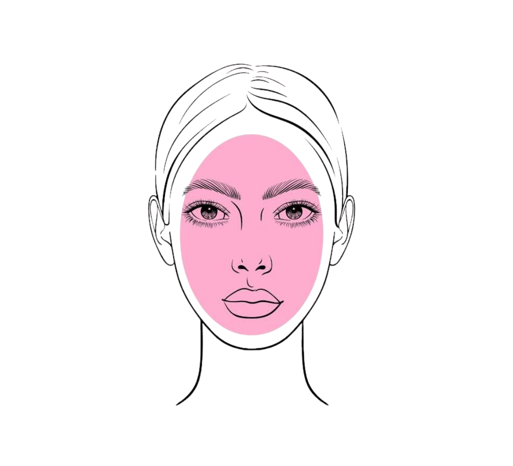
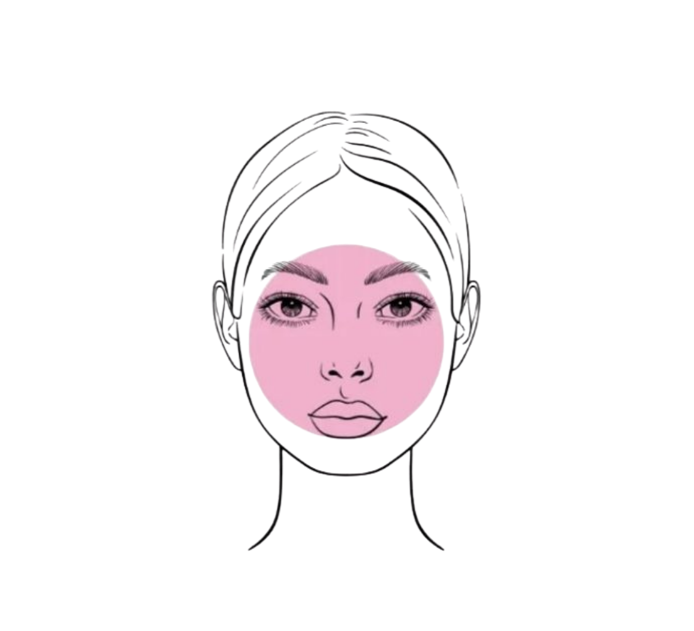
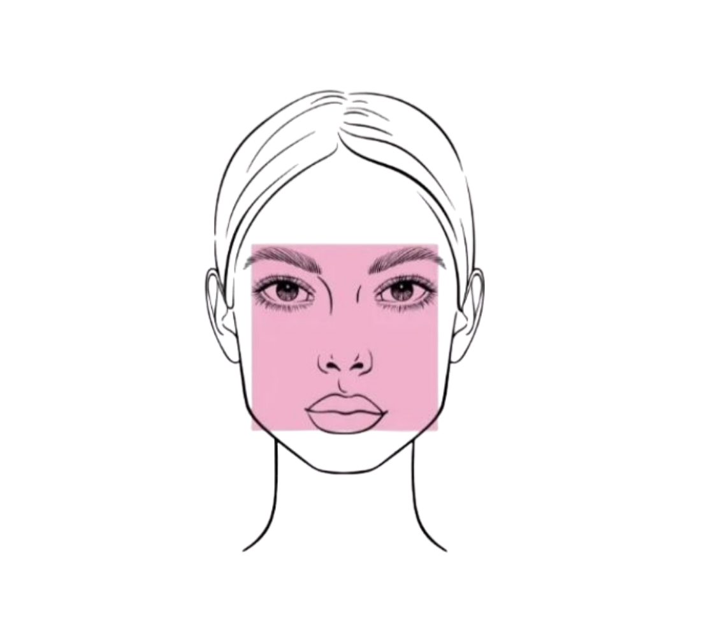
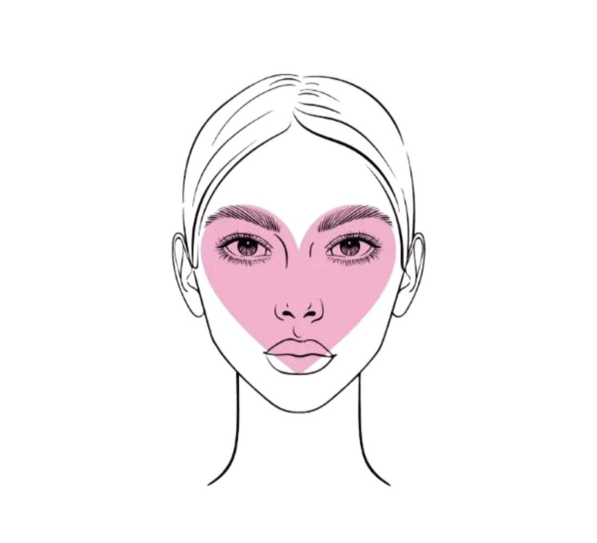
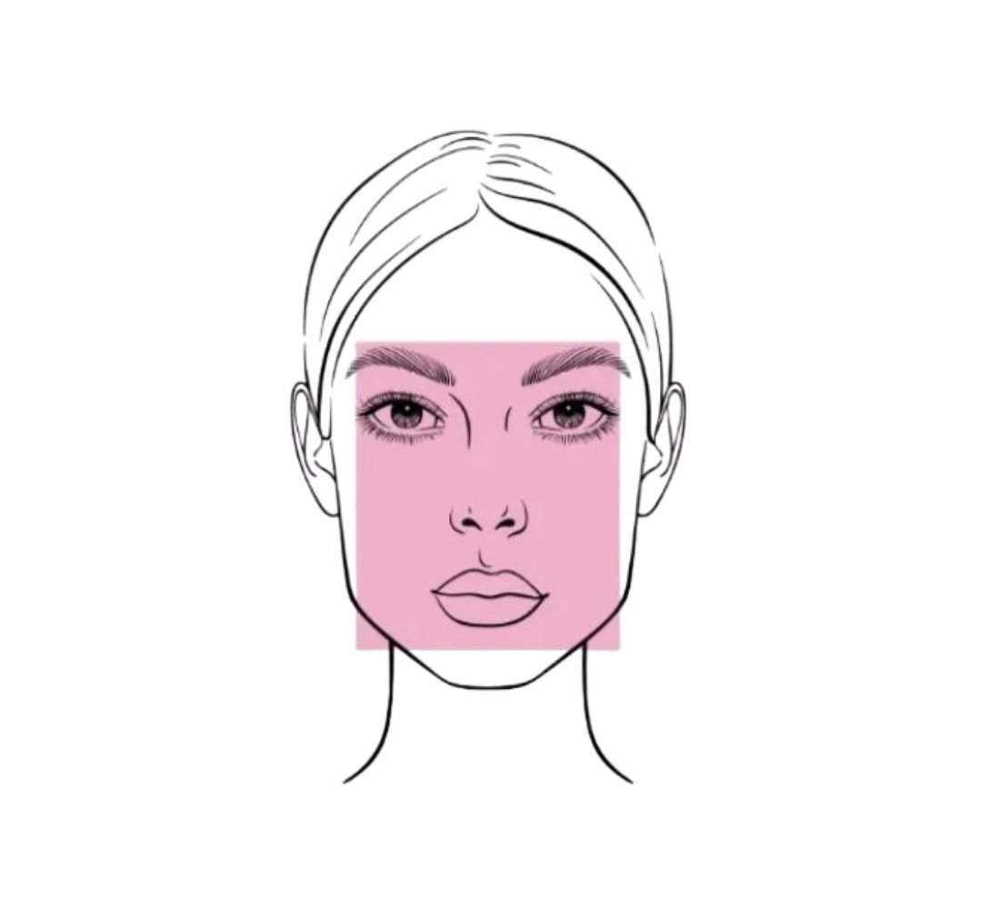

Analisis Wajah
Mulai Sekarang
Pilih metode input untuk memulai analisis bentuk wajah
Kamera Realtime
Posisikan wajahmu di tengah frame untuk hasil terbaik
Kamera Belum Aktif
Klik tombol di bawah untuk mengaktifkan kamera
Analisis bentuk wajahmu dengan teknologi AI.
Dapatkan rekomendasi dasar frame kacamata yang sesuai dengan bentuk wajahmu.
Cara Kerja
Upload foto atau aktifkan kamera untuk mengambil gambar wajahmu secara langsung.
YOLOv8 menganalisis bentuk wajahmu secara akurat dan mengidentifikasi kategorinya.
Dapatkan rekomendasi frame kacamata terbaik yang disesuaikan dengan bentuk wajahmu.
Analisis Wajah
Pilih metode input untuk memulai analisis bentuk wajah
Posisikan wajahmu di tengah frame untuk hasil terbaik
Kamera Belum Aktif
Klik tombol di bawah untuk mengaktifkan kamera
Panduan Bentuk Wajah

Proporsi seimbang, sedikit lebih panjang dari lebar. Paling versatile untuk semua jenis frame.

Lebar dan panjang hampir sama dengan garis wajah yang lembut dan membulat.

Dahi lebar, tulang pipi tegas, dan garis rahang yang kuat dan angular.

Dahi lebih lebar dengan dagu yang runcing, membentuk siluet seperti hati.

Wajah lebih panjang dari lebar dengan garis wajah yang lurus dan memanjang.